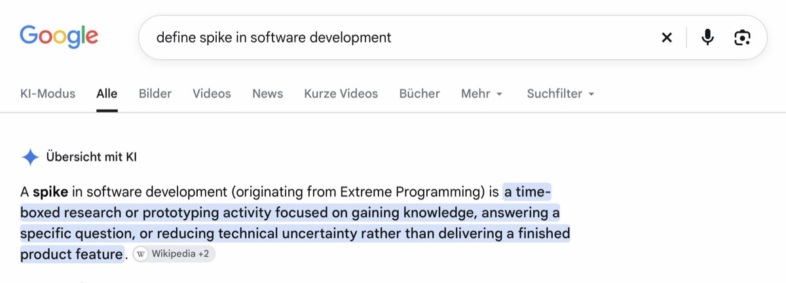
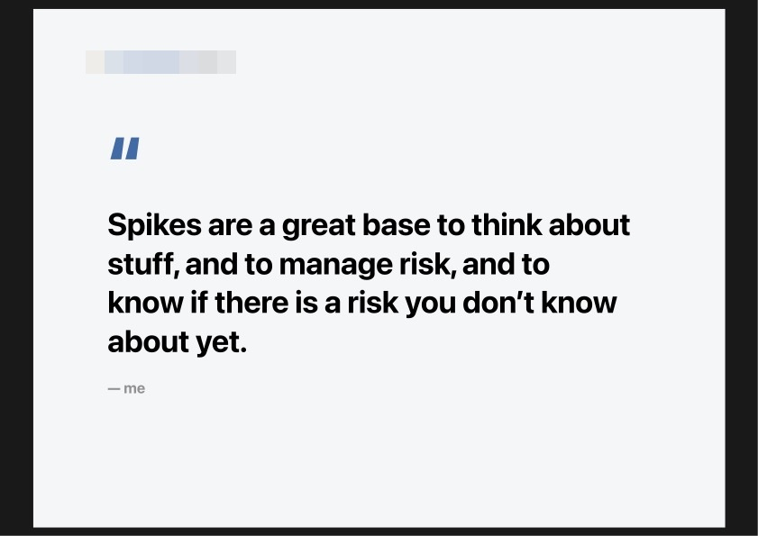

Spike: The Word That Opens the Door
The Remembering saga: 1. The Posts I Write to Forget · 2. Sharing a Chat With Myself · 3. Notes Left for the Next Me · 4. Sharing a Chat With Myself Too · 5. A Fableous Story From the Past · 6. Out for Today · 7. Spike: The Word That Opens the Door
My AI kept naming its work "spike". I googled the word to find out what it meant. It took me a while to notice the answer described how I work.
When I have the AI try something, it works in its own copy of the code, a branch, and every branch needs a name. Sometimes I picked one. Most of the time I didn't care and let the AI choose. More and more of its names ended in "spike".
So I typed "define spike in software development" into Google.

"A time-boxed research or prototyping activity focused on gaining knowledge, answering a specific question, or reducing technical uncertainty rather than delivering a finished product feature." The word comes from Extreme Programming, a way of running software projects from the late 1990s.
It didn't click. It clicked about two weeks ago, when I started asking for spikes myself and using the word out loud at work. People ask what a spike is. So I pull up this same answer and read it out loud.
Am I crazy?
I've built 34 spikes since May, and I wanted to tell the whole company how I work.
Writing down what happened is boring. So I remembered a talk I never gave.
In June our team went on an AI retreat, and I prepared the finale: I would hand a brief to Claude Design, an AI tool that builds slide decks, and present while it built the deck in front of everyone. I never got to it. I only ever watched it build by myself.
This time it fit the topic. A talk about building first, built live, with no estimate. The slides don't exist yet. An AI will build them while I talk. I asked my AI: "Am I crazy wanting to do this? But I think it fits the theme of what I want to demonstrate perfectly."
Playing it safe
My AI wrote the handover, the note Claude Design would get. It was good. It listed every slide: the title, the content, the speaker notes.
"I think the draft you've written is okay, but it's playing it safe. By giving the AI exactly what it should write, it kind of defeats the purpose."
That handover was a ticket. Think about it, write down what to build, then build exactly that. It's the very thing the talk argues against. The deck I need might not be the deck I'd have thought of.
So I gave it one hard rule and nothing else. Our design system has tiles, big numbers, timelines, quotes, even code blocks. "Part of the fun is not to create a uniform presentation. The only thing I want is that it's not text overloaded." AI decks cram everything onto the slide. The explanation goes into the speaker notes.
The rewrite handed over the problem, not the slides: what the audience should leave with, the verified facts, and "everything else is yours."
I thought I lost it
While the rewrite happened, the document I had been reading changed. All the dates and the timeline were gone, and so was the list of everything we'd skipped.
I asked my AI to bring back the version I had been reading.
It was still there. I was looking in the wrong folder.
That document matters more than the slides. It's how I write my blog posts too: before I write a word, I want every fact straight, grounded in everything that built it. The talk's dates had been checked against the actual tickets; one story I remembered as "two weeks" turned out to be twelve days. The slides can be loose. The facts can't.
Give it all of them
The facts kept growing, because I kept feeding it.
At the start the AI found a few spikes and offered a sample. "I want all of them, not just a sample of them, and I want to decide which one I don't want." It went through every branch I had and came back with 34.
Then I read the brief again. It told Claude Design it could use my quotes. There were no quotes in it. "Can you also extract some of the quotes, verbatim, of what I wrote?" So it pulled them out of my dictation, including the opening line of every spike session: what I actually typed at 2 am when I started digging up a ticket from 2021.
Each round turned up more. The more it gathered, the more I remembered.
I knew I forgot something
Then I wanted to blog about the spikes too. While writing that post, I knew I'd forgotten something.
When people ask me what a spike is, I pull up Google's definition and read it out loud. It wasn't in the talk. It went into the brief that morning.
I said it myself during this session: "I always think if I give my AI all of the relevant information, it can produce results that I didn't think about."
Decision later
I haven't given the talk yet. The brief is ready, the facts are straight, and I don't know what the deck will look like.
If I ran it today and again tomorrow, I'd get two different decks. "I give more variance to the fire that will be this presentation. But maybe it will work out."
It might not be the presentation I want, or the one I expect. That's a spike too. You get the information out of it whether you want it or not. Whether you take it, and where it goes, is a decision for later.
Only working until December
On the day, I opened Claude Design. The first thing it showed me was a notice: it was being discontinued, it would only keep working until December, and I should move my designs somewhere else.
Before the talk, I let it build a Hello World slide, a test page that just says hello. It told me it was bypassing the design system. It had just copied the design.
Then the talk. I had asked for one slide at a time, so the room could watch the deck grow. It built them all at once, and it took far too long. I stalled until it was done.
Eight slides came out. The second one, right after the title, was Google's definition of a spike. The thing I remembered last opened the deck.
Near the end came a slide quoting me.

Everybody laughed.
I explained that I dictate everything, so my own words are a source of quotes. Then everybody understood.
It ended on my own ask: "Ask for a spike instead of an estimate."